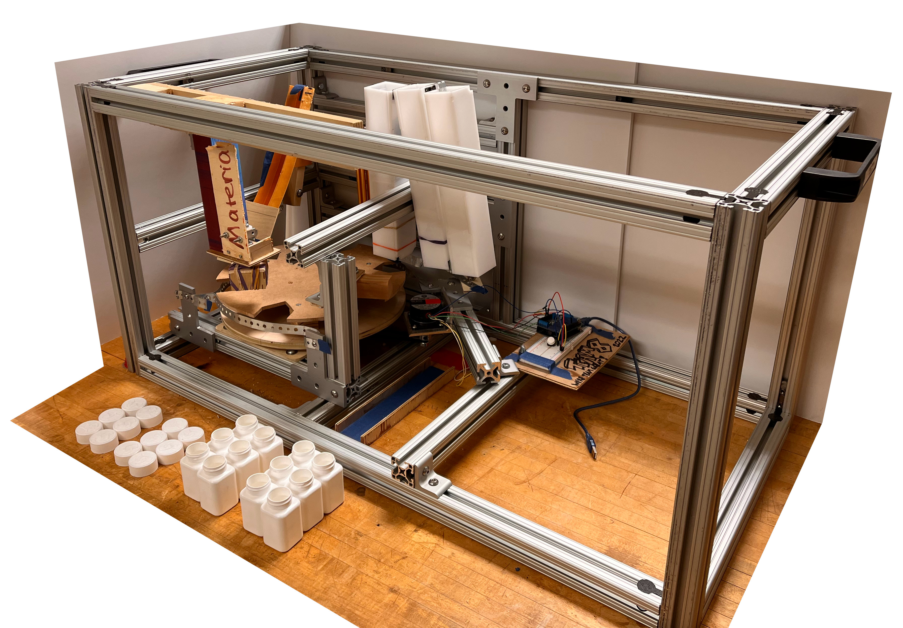
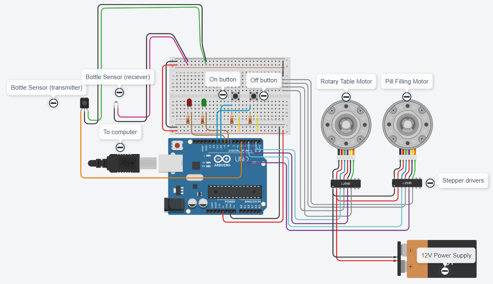
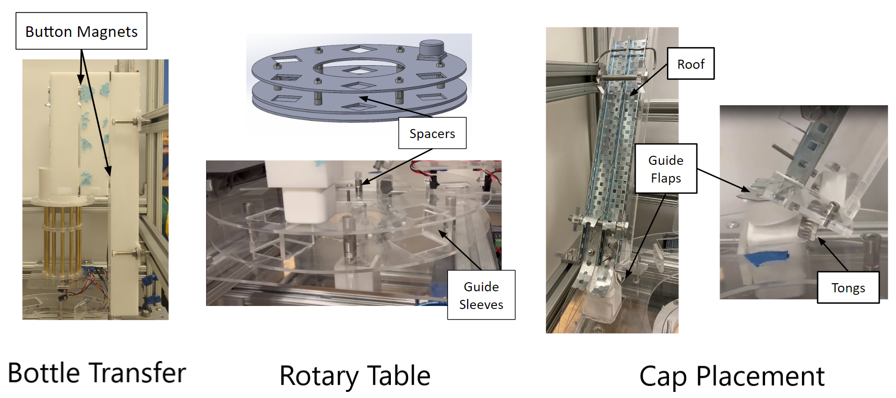
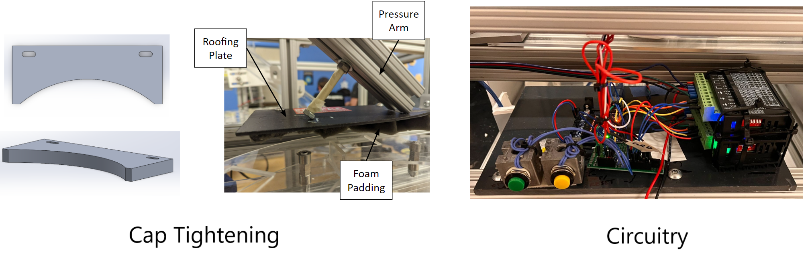
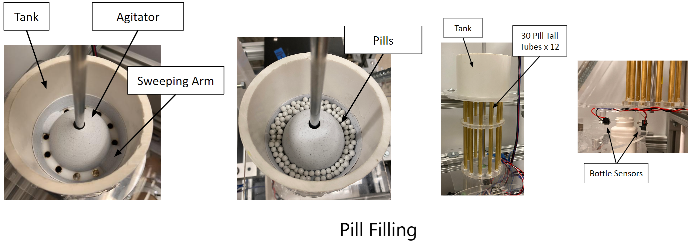

Automated Monoblock Pill Filling Station
Project Overview
The scope of this project was to create a monoblock pill filling station to be fully automated by Arduino control for a small batch vitamin distributor. The entire system must fit in a 20"x20"x40" frame for storage and for 12 x 75cc pill bottles, it must convey, fill, and fully cap (place and tighten) each bottle before exiting the system. Small spherical beads were used as pill surrogates for this project. The project was completed by a 10 person team and was sponsored by Norwalt Design and Omega Design.
Timeline
This design was completed as part of the Junior design project during the 2022-23 academic year. A working rough prototype was complete by December 2022 for Machine Design - Kinematics and Kinetics and a final design prototype was complete by May 2023 for Machine Design - Elements.
Personal Contributions
I worked on a variety of the subsystems for the design in an effort to coordinate project development, enable subsystem collaboration between the different subteams formed, iterate on various components of the design, and make sure all components could effectively, accurately, and efficiently be automated. I wired the various motors and sensors of the design to a central Arduino Uno computer and wrote the software to control and automate the design, including the pill dispensing and sensing mechanisms as well as the rotary table motion. This included logic flowcharts, wiring schematics, and operating manuals to troubleshoot the design throughout the project. I had a large contribution to the design iteration process as seen with the cap placement slide, the pill filling system components, the rotary table, and overall system architecture. I also played a crucial role in design validation with completing time trials, ensuring ISO standard compliance, and performing failure analysis on critical components of the design.
Rough Prototype
With this prototype, the functionality of each of the subsystems could be validated before manufacturing, motor/sensor implementation, and automation could commence. The prototype was initially oriented horizontally in the configuration shown above to minimize the required volume needed. In the operational mode, the bottle transfer shute (white acrylic) is extended upwards to allow 12 bottles to be preloaded before operation, and in storage, the three sections easily fold and can be secured in place via metal clips. The open design allows the pill tubes to be filled with 30 pills each and the cap placement chute to be preloaded wth 12 caps as well. A computer input is required to connect to the Arduino input using a USB cable (blue) where a button on the breadboard design (white) allows the forward motion to engage by user input. The full system in the storage configuration is shown below.
An overview of each of the major subsystems and major motion elements are described below.
Bottle Transfer
The bottles are first preloaded vertically into the bottle transfer chute such that as the main rotary table moves, it allows the bottles to be gravity fed into an indexed position in the system. The rotary table stops briefly at each subsystem before finally being ejected from the system into a collection bin by a slider wall. The rotary table is powered by a pulley drive system to a stepper motor, powered by user-input with an Arduino Uno controller.
Pill Filling
This subsystem operates via a Gatling mechanism to quickly load each bottle. Each of the 12 tubes are prefilled manually with 30 pills before operation--note that the height of each tube allows no more than 30 pills to be filled. When a bottle is underneath the system, the tube assembly rotates until it is above a hole in the base plate allowing the pills to fall into the bottle.
Cap Placement & Tightening
The cap placement system operates passively for increased functionality and reliability. At the end of the cap placement slide, two spring-like metal tongs lightly hold the bottle caps in a suspended state in the way of the bottle's motion. As the rotary table moves, the bottles drag the caps out of the chute, and a guiding flap helps straighten the cap to be flush on the bottle. The caps are tightened using a rubber box system to rotate while pressingly lightly on the cap to engage the child safety lock. The entire system can be raised and lowered via a seperate lead screw mechanism.
Path Forward
In the following stages of the project, several major changes were made to improve the functionality and reduce the complexity. First, the system was reoriented to a vertical configuration to allow the bottle transfer process from loading to collection to be grealty simplified. Each subsystem saw iterations created in order to reduce the set up needed for operation and increase the overall operation speed. Final manufacturing was completed using 80/20 extruded aluminum, 3D printing, machining, and laser cutting processes.
Award Winning Design
During the 2022 Fall Design Showcase for all monoblock pill filling station designs, our design was awarded the "People's Choice Award" by popular vote of our peers.
Final Design
The final design integrates the rotary table motion and pill filling subsystem into a central computer to create a sucessful and fully automated system. The final throughput of the system was estimated at 4.21 bottles per minute on average, though future iterations and tuning of the various design components can greatly improve this metric. The design passed all required safety standards, used just 85% of the alotted volume, used only 60% of the total budget, and was able to process at least 13 bottles which exceeded expectations. Each of the subsystem components were manufactured using laser cut acrylic, machined materials, and stock components. Several changes were made to the subsystems from the initial design prototype and are described below.
Bottle Transfer
Magnetic tabs were used to lock the chute in place in both storage and operational configurations. A direct drive system was used for the rotary table for simplicity, using a 5:1 gear box with a Stepper motor.
Pill Filling
A 450 pill tank was added above the system to load the tubes manually during operation and greatly reduce the setup time to just 1 minute. A 3D printed agitator was installed in this tank to channel pills into the tubes and ensure no more than 30 pills are loaded in each bottle.
Cap Placement
The passive system was further iterated by using spring tongs to hold the caps in place and firmly place the caps onto each bottle. The final manufacturing of acrylic and sheet metal allows for increased reliability during operation as well.
Cap Tightening
The motor drive design was replaced with a completely passive friction-driven design using a machined metal block and foam strip to assist in cap rotation. A guiding roof also places a light pressure to engage the child safety lock.
System Automation
I took a large role in integrating the various subsystems together to create a fully automated system for this project, including creating several iterations of the software used in the central controller, developing troubleshooting guides, and working on the wiring of all the circuitry for the various motor and sensors.
The system is controlled by an Arduino Uno which recieves input from the user to start and stop the operation (button control), sensors from the pill filling station to detect a bottle in location, and gives outputs for the pill filling and central rotary table stepper motors. When powered on, the system powers the rotary table motor until it detects a bottle has reached the pill filling station, after which it adjusts the position to the desired target before loading. Continuously throughout operation, the pill filling system oscillates to agitate the pills in the tank to be filled into each tube. When a bottle is ready to be loaded, the pill filling motor moves to empty the pills into the bottle before continuing oscillations again. Code was developed to individually count each pill during this process, but failure to acquire adequate sensors prevented this implementation. Iterations of the code were made to increase the functionality while limiting the computations of the computer to allow for much faster operation.
A circuit schematic is shown below for this design. Note that the signal to the motors are ran through Stepper drivers, and LED indicator lights are implemented into the soldered breadboard as well.
Design Details
Featured below are additional views of the major subsystems of the design located around the center rotary table. The total 10 person team was divided into subteams of 1-3 people in order to iterate, manufacture, test, and finalize each subsystem individually before being integrated into the final design. I helped coordinate this integrate and worked in several of these subteams as well throughout the project timeline.
  